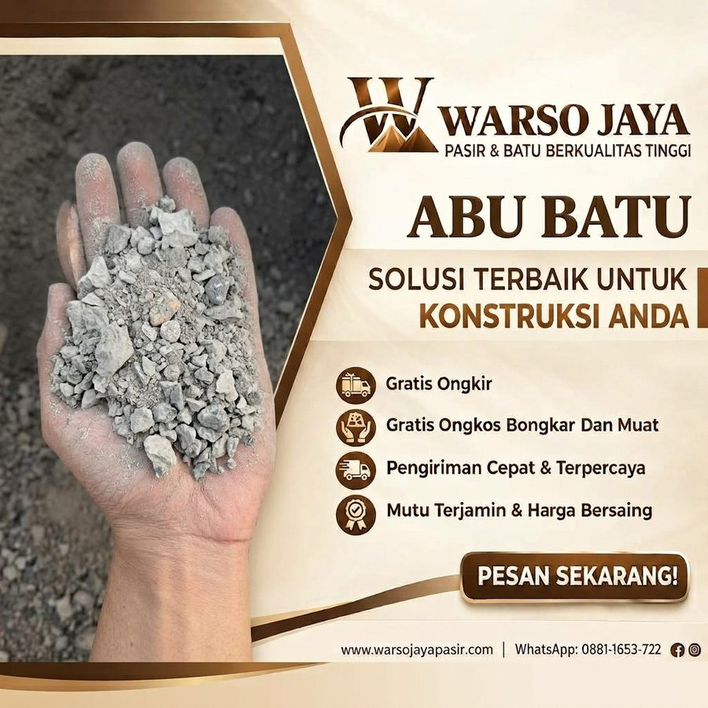

Jual Abu Batu di Jabodetabek
Abu batu hasil pemecahan batu, bertekstur halus untuk alas, pengisi, dan campuran paving.

Abu Batu
Abu batu umumnya dipakai sebagai alas, pengisi, dan campuran paving. Hubungi kami untuk detail.
| Kategori | Pasir Cor & Bangunan |
|---|---|
| Karakter | Halus |
| Kegunaan umum | Alas, pengisi, paving |
| Satuan harga | Colt Diesel 6,1 m³ |
| Area kirim | Tangerang, Jakarta, Depok, Bogor, Bekasi |
Harga dapat berubah mengikuti stok dan lokasi pengiriman. Konfirmasi lewat WhatsApp sebelum memesan.
Jual Abu Batu di Jabodetabek
Mencari supplier Abu Batu di Jabodetabek? Warso Jaya Pasir menyediakan Abu Batu untuk kebutuhan rumah tinggal, renovasi, dan proyek di Tangerang, Jakarta, Depok, Bogor, dan Bekasi. Anda dapat melihat harga per kota pada halaman ini, lalu memesan lewat WhatsApp dengan menyebutkan jumlah rit dan lokasi pengiriman.
Apa Itu Abu Batu?
Abu Batu adalah material halus hasil pemecahan batu yang umumnya dipakai sebagai alas, pengisi, dan bahan campuran. Teksturnya yang halus membuatnya mudah diratakan dan dipadatkan.
Fungsi Utama Abu Batu
Dipakai sebagai lapisan alas sebelum pemasangan paving.
Mengisi celah dan meratakan permukaan.
Dipakai pada pembuatan paving, batako, dan sejenisnya.
Keunggulan Membeli Abu Batu di Warso Jaya Pasir
Mudah diratakan dan dipadatkan.
Dipakai untuk alas, pengisi, dan campuran.
Kami bantu jelaskan kegunaannya untuk pekerjaan Anda.
Tips Memakai Abu Batu
- Padatkan lapisan secara merata saat dipakai sebagai alas.
- Hindari menumpuk di dekat saluran air.
- Tutup saat hujan agar tidak terbawa air.
Harga Abu Batu per Kota
| Kota Tujuan | Harga |
|---|---|
| Tangerang | Rp 2.550.000 / rit |
| Jakarta | Rp 2.600.000 / rit |
| Depok | Rp 2.600.000 / rit |
| Bogor | Rp 2.650.000 / rit |
| Bekasi | Rp 2.650.000 / rit |
Harga per rit Colt Diesel 6,1 m³, dapat berubah sewaktu-waktu. Untuk lokasi di luar kota di atas atau jumlah tertentu, tanyakan lewat WhatsApp. Anda juga bisa menghitung kebutuhan lewat kalkulator material.
Layanan Pengiriman Abu Batu ke Seluruh Jabodetabek
Material dikirim langsung ke lokasi proyek Anda. Pilih kota tujuan Anda:
Pengiriman Abu Batu ke Jakarta
Warso Jaya Pasir melayani kebutuhan Abu Batu di wilayah Jakarta untuk rumah tinggal, renovasi, maupun proyek. Wilayah meliputi: Jakarta Pusat, Jakarta Barat, Jakarta Utara, Jakarta Timur, Jakarta Selatan.
Pengiriman Abu Batu ke Tangerang
Warso Jaya Pasir melayani kebutuhan Abu Batu di wilayah Tangerang untuk rumah tinggal, renovasi, maupun proyek. Wilayah meliputi: Kota Tangerang, Kabupaten Tangerang, Kota Tangerang Selatan.
Pengiriman Abu Batu ke Bekasi
Warso Jaya Pasir melayani kebutuhan Abu Batu di wilayah Bekasi untuk rumah tinggal, renovasi, maupun proyek. Wilayah meliputi: Kota Bekasi, Kabupaten Bekasi.
Pengiriman Abu Batu ke Depok
Warso Jaya Pasir melayani kebutuhan Abu Batu di wilayah Depok untuk rumah tinggal, renovasi, maupun proyek. Wilayah meliputi: Kota Depok.
Pengiriman Abu Batu ke Bogor
Warso Jaya Pasir melayani kebutuhan Abu Batu di wilayah Bogor untuk rumah tinggal, renovasi, maupun proyek. Wilayah meliputi: Kota Bogor, Kabupaten Bogor.
Untuk titik pengiriman di luar daftar ini, silakan tanyakan terlebih dahulu agar kami bisa memastikan jangkauan dan estimasi pengirimannya.
Pertanyaan Seputar Abu Batu
Abu batu dipakai untuk apa?
Umumnya untuk alas paving, pengisi, dan bahan campuran produk beton.
Berapa harga Abu Batu?
Lihat tabel harga per kota di halaman ini, per rit colt diesel 6,1 m³. Harga dapat berubah mengikuti stok dan lokasi.
Bisakah dikirim ke lokasi saya?
Bisa untuk area Tangerang, Jakarta, Depok, Bogor, dan Bekasi. Tanyakan untuk lokasi lain.
Pilihan Material Terkait


Butuh Abu Batu untuk Proyek Anda?
Hubungi Warso Jaya Pasir untuk informasi harga, ketersediaan, dan pengiriman ke lokasi Anda.